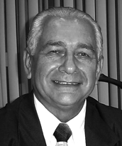

Economista e empresário, Edmar Gomes de Melo foi membro fundador da Conorte e um dos defensores da criação do Estado do Tocantins, atuando ao lado de Aurolino Ninha. Egresso da Cenog, foi eleito em 1963 o primeiro presidente da subcomissão de Pedro Afonso, a primeira da região, que desempenhou papel importante na conscientização das populações de cidades como Pedro Afonso, Tupirama, Miracema, Guaraí, Araguaína e Tocantinópolis sobre o desenvolvimento do norte goiano.
Em 1965, mudou-se para Brasília, onde reencontrou membros do movimento e participou de uma reunião memorável no Hotel Nacional que renovou o entusiasmo pela causa. Posteriormente, integrou oficialmente a Conorte, continuando seu empenho pela criação do Tocantins.
